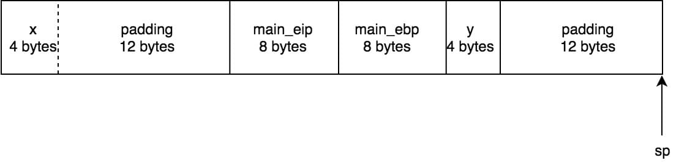

关于栈内存分布的一道有趣的面试题
偶然间看到了下面一道面试题:
对于下面的代码, 实现函数 hijack
|
使得输出结果为:
x = 100 |
问题分析
在 hijack 函数为空的情况下, 上面函数两次输出值肯定都是 100. 这道题的难点就在于如何在没有传入 x 地址的情况下, 在 hijack 函数中修改 x 的值.
要修改 x 的值就必须知道它的地址, 那除了参数传递之外, 还有没有别的途径来获取调用函数的局部变量呢? 简单分析下就可以发现是可以做到的:
- 函数的局部变量都是存储在栈上的;
- 栈上存储空间的变化是有规律的;
- 我们可以在被调用函数声明一个局部变量 y, 再计算出 y 和 x 之间的距离, 这样就可以得到 x 的地址!
上面这个方法需要我们分析在函数调用时, 栈空间是如何分配的.
栈内存是如何分配的
在函数调用时, 栈内存是按下面的布局进行分配的:
// 地址从高到低 |
其中 caller_eip 存储的是调用函数的返回地址; caller_ebp 存储的是调用函数的栈基址 caller1_ebp = &caller0_ebp. 在 64 位系统中 caller_eip 和 caller_ebp 都是 8 个字节大小, int 类型变量是 4 个字节.
同时 sp 和 ebp 中的地址按 16 字节对齐的, 也就是地址的最后四位必须都为 0 , 如果地址不满足这个条件, 就会额外补充一些空间.
好了, 我们先在 hijack 函数里定义局部变量变量 y :
void hijack() { |
这时我们来分析下栈内存的布局:

在为 x 和 y 分配内存时, sp 寄存器因为是按 16 字节对齐的, 所以会多了 12 个字节的填充内容.
从图中可以看出 x 和 y 之间的距离是 &x - &y = 12 + 8 + 8 + 8 + 4 = 32 个字节.
其实我们也可以通过直接打印出 x , y 的地址来计算它们之间的距离:
printf("&y = %p\n", &y); |
计算出距离后我们就可以写代码实现了 :)
具体的代码实现
|
程序的运行结果为:
x = 100 |
这段代码还要注意下面两点:
- 栈是从高地址往低地址增长的, y 的地址需要 + delta 来找到 x 的地址;
- C 语言中
(int &) + 1相当于是往前移动了sizeof(int)个字节, 而我们之前得到的距离是按字节来计算的, 因此需要32/sizeof(int);